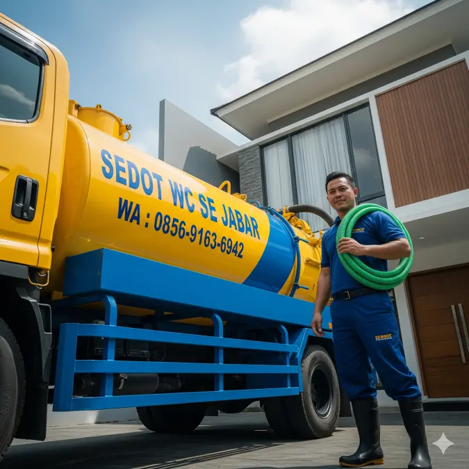

Selamat Datang di Pusat Komando Sedot WC Jabar!
Kami adalah jaringan layanan sanitasi dan sedot WC terbesar yang beroperasi melintasi berbagai kota strategis di Jawa Barat. Dengan pengalaman bertahun-tahun dan puluhan armada truk tangki vakum yang tersebar di titik-titik krusial, kami memastikan setiap panggilan darurat Anda tertangani dengan cepat, bersih, dan tuntas.
✅ Komitmen Layanan Kami (SOP Ketat)
- Harga Transparan: Biaya pasti Rp 400.000 per tangki (Kapasitas maksimal 3 Kubik / 3000 Liter). Tanpa pungutan liar!
- Fasilitas Selang Panjang: Menjangkau rumah di dalam gang atau perumahan padat. Gratis penggunaan 20 meter pertama.
- Pelancaran Tanpa Bongkar: Menggunakan mesin spiral rooter canggih untuk menghancurkan sumbatan di pipa tanpa merusak keramik lantai Anda.
- Armada Tersebar: Pesan pagi datang siang, pesan siang datang sore. Kami kirimkan truk terdekat dari kota Anda!
📞 HUBUNGI ADMIN PUSAT VIA WHATSAPP
📍 Jangkauan Operasional (10 Kota Utama)
Silakan klik wilayah terdekat dengan domisili Anda untuk melihat detail layanan khusus di kota Anda: